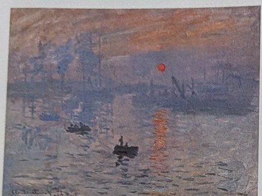
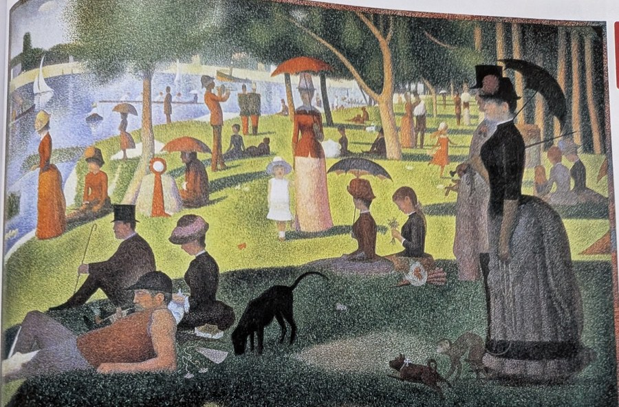
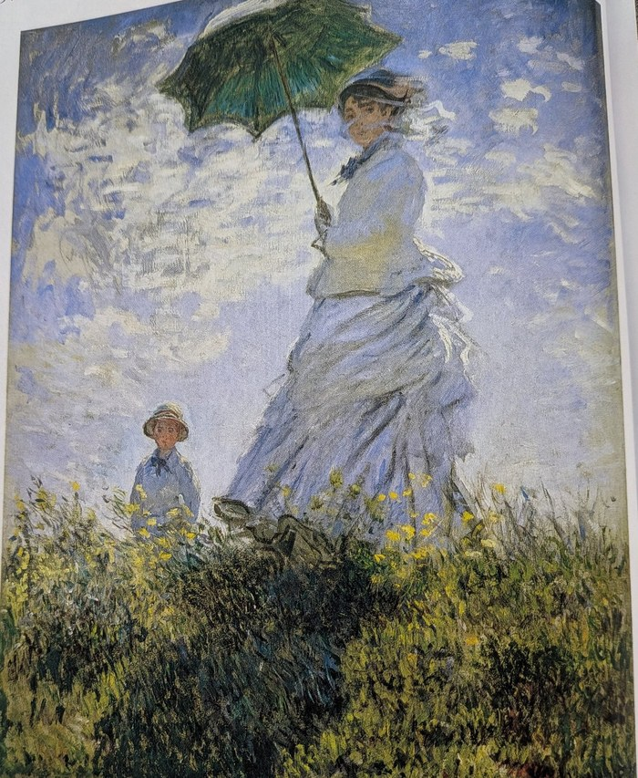
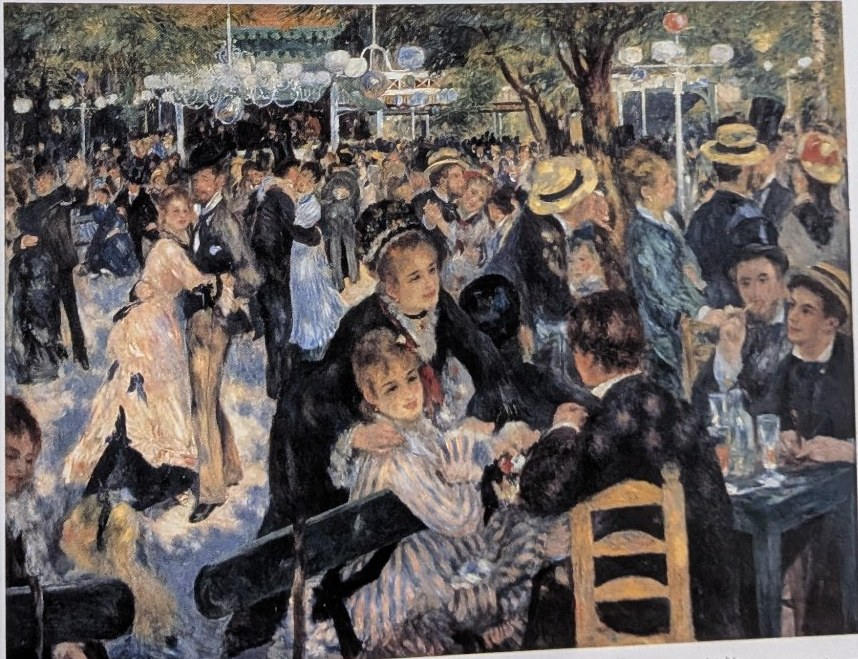
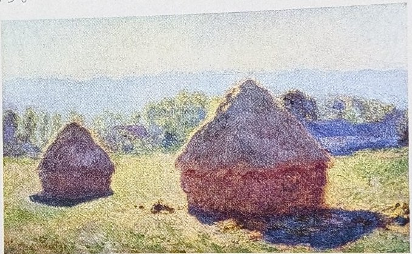

※本番のテストと同じ作りの模擬テストです。本番と同じく知識50点＋実技50点の構成で、知識編は大問4題です。実技編は「手のデッサン」の練習課題として、家で実際に描いて取り組む形にしています。範囲は、美術資料P3〜6「色の整理」、美術資料P114〜115「光に色をみつけた」、手のデッサンだけです。
※大問4は、資料集の絵を見て作品名・作者名を答える図版問題です。暗記シートの「絵と題名と作者をつなげて覚える」で練習しておきましょう。
☆ 解答上の注意 ☆
全50点 まずは時間を計って、ノートや資料集を見ずに解いてみましょう。
(1) 下の図は色相環です。図を見て、次の問いに答えなさい。［2点×5］
図：色相環（色名つき）
① 赤の補色はどれか、色名で答えなさい。
② 黄の補色はどれか、色名で答えなさい。
③ 赤の類似色を1つ、色名で答えなさい。
④ 暖色にあたる色を1つ、色名で答えなさい。
⑤ 寒色にあたる色を1つ、色名で答えなさい。
(2) 次の文の（ 1 ）〜（ 3 ）に入る語句を答えなさい。［1点×3］
色には3つの性質があり、これを色の三属性という。（ 1 ）は、赤・黄・青のように色みの違いを表す性質、（ 2 ）は色の明るさの度合いを表す性質、（ 3 ）は色のあざやかさの度合いを表す性質である。
(3) 次の問いに答えなさい。［1点×2］
① 白・黒・灰色のように、色みのない色を何というか。
② 赤・青・黄のように、色みのある色を何というか。
(1) 下の図は、同じ青の色相で、明度や彩度を変えた色見本です。図を見て答えなさい。［2点×4］
図：同じ青の色相で明度・彩度を変えた色見本
① A〜Eの中で、最も明度が高い色はどれか、記号で答えなさい。
② A〜Eの中で、最も彩度が高い（あざやかな）色はどれか、記号で答えなさい。
③ A〜Eの中で、最も彩度が低く、くすんで見える色はどれか、記号で答えなさい。
④ 明度と彩度の組み合わせによって決まる、色の調子のことを何というか。
(2) 配色について、次の問いに答えなさい。
① 色相環で向かい合う補色同士を組み合わせると、互いの色はどのように見えるか。次のア〜ウから1つ選び、記号で答えなさい。［2点］
ア にごって見える
イ 引き立て合って、あざやかに見える
ウ なじんで、区別がつかなくなる
② 色相環で隣り合う類似色同士を組み合わせた配色の特徴として、正しいものをア〜ウから1つ選び、記号で答えなさい。［2点］
ア 強い対比が生まれ、派手な印象になる
イ 調和しやすく、まとまりのある印象になる
ウ 色の明暗の差が大きくなる
③ 明度の差が大きい色同士を組み合わせると、どのような効果があるか、簡単に書きなさい。［3点］
(1) 次の文の（ 1 ）〜（ 5 ）に入る語句を答えなさい。［1点×5］
19世紀の後半、フランスを中心に（ 1 ）と呼ばれる画家たちが現れた。それまでの画家がアトリエ（室内）で描くことが多かったのに対して、彼らは（ 2 ）に出て、移りゆく光や空気の様子をとらえようとした。描き方にも特徴があり、絵の具を混ぜ合わせるのではなく、原色に近い色を小さなタッチ（筆のあと）で並べて置く（ 3 ）という方法で描いた。この描き方を代表する画家が（ 4 ）であり、彼の作品「（ 5 ）」の題名が、（ 1 ）という呼び名の由来になった。
(2) 次の問いに答えなさい。［2点］
印象派の画家たちは、物の影を、それまでの絵画のように黒や茶色では表さず、ある色を使って表しました。印象派が影を表すのに使った色は、どのような色か、答えなさい。
(3) 次の問いに答えなさい。［3点］
印象派の画家たちが、アトリエ（室内）ではなく戸外に出て描いたのはなぜか、理由を簡単に書きなさい。
次の絵を見て、作品名と作者名を答えなさい。［各2点（作品名1点・作者名1点）］

絵（1）
(1) 作品名：＿＿＿＿＿＿＿＿＿＿ 作者名：＿＿＿＿＿＿＿＿＿＿

絵（2）
(2) 作品名：＿＿＿＿＿＿＿＿＿＿ 作者名：＿＿＿＿＿＿＿＿＿＿

絵（3）
(3) 作品名：＿＿＿＿＿＿＿＿＿＿ 作者名：＿＿＿＿＿＿＿＿＿＿

絵（4）
(4) 作品名：＿＿＿＿＿＿＿＿＿＿ 作者名：＿＿＿＿＿＿＿＿＿＿

絵（5）
(5) 作品名：＿＿＿＿＿＿＿＿＿＿ 作者名：＿＿＿＿＿＿＿＿＿＿
50点分（練習課題）
実技編は、本番と同じ「手のデッサン」です。この模擬では練習課題として、自分の手を見て、鉛筆で実際に描いて取り組みましょう。大きさは本番と同じくほぼ実物大を目安にします。
評価ポイント（本番と同じ4つ）
進め方の手順
図：陰影6段階の濃淡見本（1が最も明るく、6が最も暗い）
※ 本番当日は鉛筆が必要です。忘れずに持っていきましょう。描き終わったら、上の評価ポイント4つを自分でチェックしてみましょう。
(1) ① 青緑／② 青紫（紫でも可）／③ 橙または赤紫／④ 橙・黄・赤紫など（赤も暖色です）／⑤ 青・青緑・青紫・緑など
補色は、色相環で向かい合う位置にある色同士のことです。赤の向かいは青緑、黄の向かいは青紫になります。類似色は、色相環で隣り合う色のことで、赤の隣は橙と赤紫です。暖色は赤・橙・黄のように暖かく感じる色、寒色は青・青緑のように冷たく感じる色で、緑や紫はその中間の中性色として扱われることもあります。
(2) （ 1 ）色相／（ 2 ）明度／（ 3 ）彩度
色の三属性は色相・明度・彩度です。色相は色みの違い、明度は明るさの度合い、彩度はあざやかさの度合いを表します。明度が最も高い色は白、最も低い色は黒です。
(3) ① 無彩色／② 有彩色
白・黒・灰色のように色みのない色が無彩色で、明度の違いだけで区別されます。色みのある色は有彩色で、三属性すべてをもっています。
つまずきポイント：補色は「向かい合う色」、類似色は「隣り合う色」です。色相環の図で位置を確認しながら覚えましょう。
(1) ① B／② A／③ E／④ トーン
明度と彩度の組み合わせで決まる色の調子をトーンといいます。Bは白に近い明るい色で、明度が最も高くなっています。Aは原色に近いあざやかな色で、彩度が最も高い色です。Eは灰色に近く、彩度が最も低く、くすんで見えます。同じ色相でも、トーンが違うと受ける印象が大きく変わります。
(2) ① イ／② イ／③ （例）明暗の対比が強くなり、はっきりとした引き締まった印象になる。遠くからでも目立つ。
補色同士は互いを引き立て合って、それぞれがよりあざやかに見えます。類似色同士は色みが近いので調和しやすく、まとまりのある印象になります。明度の差が大きい配色は、明暗のコントラストが強くなり、文字や形がはっきり見える効果があります。
つまずきポイント：「トーン」は明度だけ、彩度だけではなく、その組み合わせで決まる、という点が問われやすいところです。
(1) （ 1 ）印象派／（ 2 ）戸外／（ 3 ）筆触分割／（ 4 ）モネ／（ 5 ）印象・日の出
筆触分割とは、色を混ぜ合わせるのではなく、原色に近い色を小さなタッチ（筆のあと）のまま並べて置く描き方です。見る人の目の中で色が混ざって見えるため、光のきらめきや空気の感じを表すのに向いています。モネの「印象・日の出」は、印象派という名前の由来になった作品として知られています。
(2) 青や紫などの、色みのある色
印象派の画家たちは、戸外の光の中で影をよく観察し、影にも空の色などの光が映って色みを帯びて見えることに気づきました。そのため、影を黒や茶色ではなく、青や紫などの色で表しました。
(3) （例）移り変わる光や空気の様子を、その場で直接見てとらえて描くため。
光の色や明るさは、時刻や天気によって刻々と変わります。印象派の画家たちは、その一瞬の光や空気の感じを逃さないよう、戸外に出て直接観察しながら描きました。
(1) 作品名：印象・日の出／作者名：クロード・モネ
見分けポイント：朝もやの中の港と、水面に映る赤い太陽が目印です。「印象だけで何を描いているか分からない」という当時の批評から、「印象派」という名前が生まれました。
(2) 作品名：グランド・ジャット島の日曜日の午後／作者名：ジョルジュ・スーラ
見分けポイント：近づいて見ると、画面全体が細かな点の集まりになっています。これが新印象派の点描法（並置混色）です。日傘をさした人々が休日を過ごす公園の場面です。
(3) 作品名：散歩、日傘をさす女／作者名：クロード・モネ
見分けポイント：緑の日傘をさす女性と、そのそばに立つ子どもの姿。風になびく草やドレス、雲の動きなど、瞬間の情景を軽いタッチで描いています。
(4) 作品名：ムーラン・ド・ラ・ギャレットの舞踏会／作者名：オーギュスト・ルノワール
見分けポイント：大勢の人が踊る屋外のダンスホール。人々や地面に、木もれ日の光がまだらに当たっているのが特徴です。
(5) 作品名：積みわら、白昼／作者名：クロード・モネ
見分けポイント：野原に置かれた大きな積みわら。モネは同じ積みわらを、朝・白昼・夕方と時刻を変えて描き分けました（連作）。白昼のものは日差しが強く、影が濃くはっきりしています。
つまずきポイント：積みわらの連作は、朝＝淡い光、白昼＝強い日差しと濃い影、夕方＝全体が赤みを帯びる、で見分けましょう。スーラ（新印象派・点描）とモネ（印象派）を取り違えないことも大切です。
デッサンが描き終わったら、本番の評価ポイント4つで自分の絵をチェックしましょう。
まちがえた問題にチェックを入れて「記録する」を押すと、まちがい復習ボックスに残ります。あとで復習ページに出てきます。